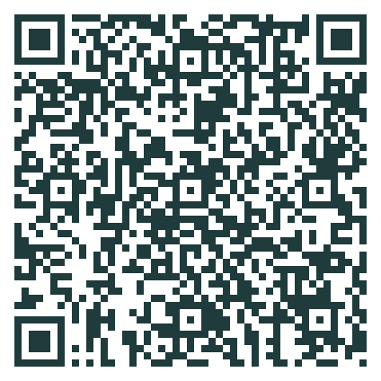
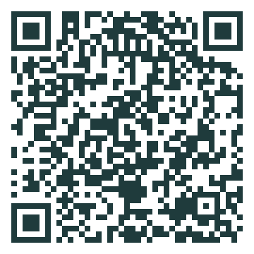
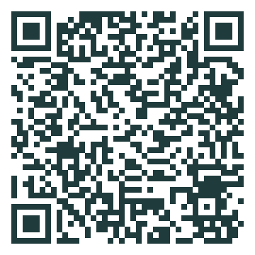

湯布院三世代BBQ旅のしおり
日程：2026年11月7日（土）〜8日（日）／ 宿：AMBER Yufuin【Villa1】
住所：〒879-5103 大分県由布市湯布院町川南839-12 ／ 電話：0977-75-9238（9:00〜18:00）
チェックイン：15:00〜18:00 ／ チェックアウト：〜10:00 ／ 予約番号：家族内共有メモで確認 ／ 代表：家族内共有
注意：遅れる場合は宿へ連絡。パジャマ・浴衣なし。11月は防寒必須。
出発地・集合
八代市福正町
10:00出発目安。
10:00出発目安。
八代市田中東町
10:00出発目安。
10:00出発目安。
小倉南区葉山町
12:00出発目安。
12:00出発目安。
集合
13:45 イオン湯布院店 → 14:30宿へ → 15:00チェックイン。
13:45 イオン湯布院店 → 14:30宿へ → 15:00チェックイン。
プランA：通常
10:00 八代2台出発 ／ 12:00 小倉南区出発 ／ 13:45 イオン湯布院店集合・不足分買い出し ／ 15:00 チェックイン ／ 16:00 温泉・BBQ準備 ／ 17:00 BBQ開始 ／ 19:30 片付け・集合写真 ／ 20:30 温泉・家族時間。
プランB：雨・渋滞・体調優先
1台が30分以上遅れる、強雨、寒さ、年配の方の疲れが強い場合。買い出しを氷・水・朝食・不足肉に限定し、宿での休憩を優先。BBQは短縮し、ホイル焼き・汁物・温かい飲み物を増やします。翌朝観光はなしでもよいです。
QRコード

宿の地図
集合地図高速情報
観光公式

金鱗湖買い出しチェック：食材
牛焼肉 900g〜1.1kg
豚バラ/肩ロース 500〜600g
鶏もも/せせり 500〜700g
ソーセージ 300g
エビ 8〜12尾
ホタテ/イカ 500g
鮭4切れ・明太子1パック
玉ねぎ3個、ピーマン/パプリカ6〜8個
なす3本、かぼちゃ1/4個
しいたけ2P、きのこ各1〜2P
とうもろこし4本、ミニトマト2P
サラダ野菜、枝豆、漬物/キムチ
パックご飯10〜12個、味噌汁/スープ12食
朝食：パン、卵10個、ヨーグルト8個、果物
買い出しチェック：飲み物・消耗品
ビール/発泡酒 350ml×16〜18本
ハイボール/チューハイ 350ml×8本
焼酎720ml×1、日本酒またはワイン1本
炭酸水500ml×6〜8、氷2kg×2
水2L×3、お茶2L×3、ノンアル6本
焼肉のたれ2種、ポン酢、レモン
油、バター、柚子こしょう
アルミホイル、ラップ、保存袋
キッチンペーパー、ウェットティッシュ
使い捨て手袋、ゴミ袋、予備紙皿/紙コップ
個人持ち物
パジャマ・部屋着・下着・靴下
上着・ひざ掛け・厚手靴下
常備薬・保険証/マイナカード
眼鏡・補聴器電池・杖など
充電器・モバイルバッテリー
クーラーボックス・保冷剤
役割
総合代表：宿連絡・支払い ／ 買い出し：不足分の確認と購入 ／ 記録・共有：写真・家族LINE共有 ／ 焼き係：30分交代 ／ 年配の方のサポート：休憩・防寒・体調確認。
安全：生肉用トングと食べる箸を分けます。運転する方は、その日の運転終了後にお酒を飲みます。翌朝運転する方は、夜のお酒を早めに切り上げます。